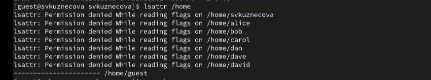
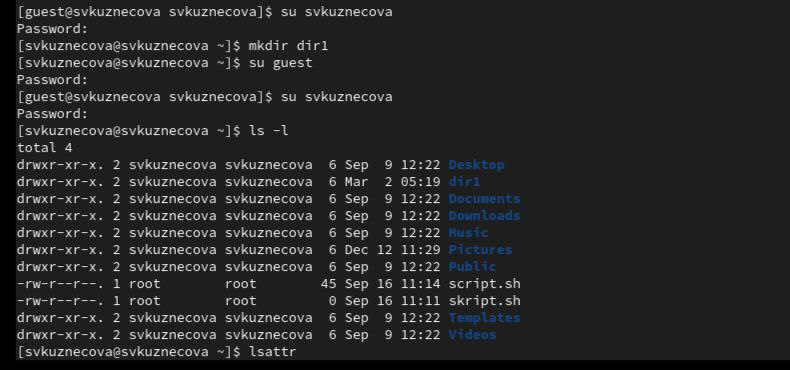
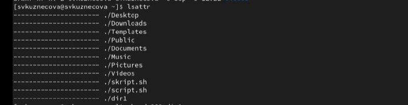
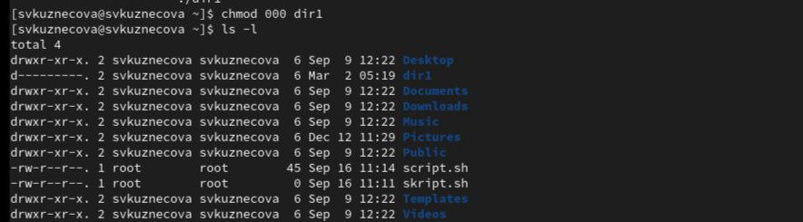
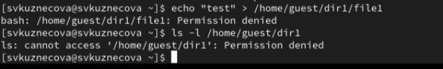
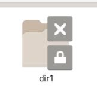
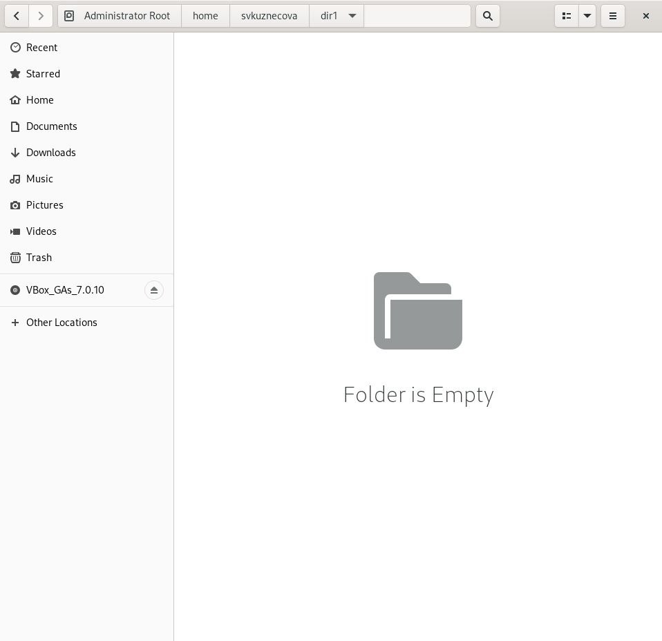

Расширенные атрибуты установленные на поддиректориях
Команды ls -l и lsattr
Команда ls -l
Команда lsattr
Снятие с директории всех атрибутов
Снятие с директории всех атрибутов
Создание файла в директории dir1 и сообщение об ошибке отразилось на создании файла
Создание файла в директории dir1
Ошибка
Ошибка
Выводы
В ходе выполнения лабораторной работы были приобретены практические навыки работы в консоли с атрибутами файлов, закрепление теоретических основ дискреционного разграничения доступа в современных системах с открытым кодом на базе ОС Linux1.